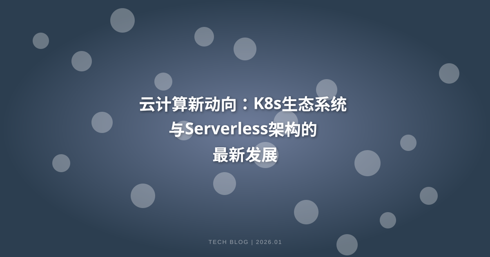

本文探讨了云计算领域的新动向，特别是Kubernetes生态系统与Serverless架构的最新发展。通过分析这两者的结合如何推动云原生应用的发展，以及它们在企业数字化转型中的关键作用，旨在为读者提供深刻的见解和实用的技术参考。
云计算新动向：K8s生态系统与Serverless架构的最新发展
随着云计算的普及，企业对高效、灵活的计算资源的需求不断增长。在这一背景下，Kubernetes（K8s）生态系统和Serverless架构正逐渐成为云计算领域的两大重要趋势。本文将深入探讨这两者的最新发展及其相互作用，帮助读者理解如何利用这些技术来推动企业的数字化转型。
一、Kubernetes生态系统的崛起
Kubernetes是一个开源的容器编排平台，最初由Google开发，并在2014年捐赠给云原生计算基金会（CNCF）。其主要功能是自动化应用程序的部署、扩展和管理。K8s的崛起主要得益于以下几个因素：
1.1 弹性和可扩展性
Kubernetes能够根据负载自动扩展容器实例，确保应用在高峰期仍然能够保持良好的性能。这种弹性使得企业能够在需求波动时灵活调整资源配置。
1.2 生态系统的丰富性
K8s的生态系统日益丰富，包括众多的工具和插件，如Helm、Istio、Prometheus等，这些工具为开发和运维人员提供了极大的便利，使得集成和管理变得更加高效。
1.3 社区支持
Kubernetes背后有强大的社区支持，持续的更新和改进使得它不断适应新的技术趋势和企业需求。许多企业和云服务提供商也积极参与K8s生态的建设，形成了良性的循环。
二、Serverless架构的兴起
Serverless架构是一种云计算执行模型，开发者无需管理服务器，而是专注于代码的编写。云服务提供商负责自动管理服务器的全部基础设施。Serverless架构的兴起主要得益于以下几点：
2.1 成本效益
在Serverless架构中，用户只需为实际使用的计算资源付费，避免了闲置资源的浪费。这种按需计费的模式对于许多初创企业和中小企业尤其具有吸引力。
2.2 开发效率
开发者可以专注于业务逻辑而不是基础设施配置，极大地提高了开发效率。通过使用Serverless框架，团队能够更快地推出新功能，响应市场变化。
2.3 自动化和无缝集成
Serverless架构通常与其他云服务（如数据库、存储、消息队列等）紧密集成，提供了一种无缝的开发体验。同时，许多云服务提供商也提供了丰富的事件驱动模型，使得函数的调用更加灵活。
三、K8s与Serverless架构的结合
尽管Kubernetes和Serverless架构在设计理念上有一定区别，但它们的结合可以为企业提供更强大的云原生应用能力。以下是K8s与Serverless架构结合的一些重要发展：
3.1 K8s上的Serverless解决方案
一些开源项目如Kubeless、OpenFaaS和Fission等，旨在将Serverless架构引入Kubernetes生态。这些项目使得开发者能够在K8s集群上轻松创建和管理无服务器函数，充分利用Kubernetes的弹性和灵活性。
3.2 事件驱动架构
K8s与Serverless的结合促进了事件驱动架构的发展。通过使用K8s的CronJob、Pod和Service等功能，开发者可以实现基于事件的自动化处理，提升应用的响应速度和灵活性。
3.3 Hybrid Cloud和Multi-Cloud策略
在多云和混合云的环境中，Kubernetes作为一个统一的管理平台，可以有效地支持Serverless架构的实施。企业可以在不同的云环境中部署Serverless函数，实现资源的最佳配置，降低成本。
四、K8s与Serverless架构在企业中的应用场景
Kubernetes和Serverless架构的结合为企业提供了许多创新的应用场景：
4.1 微服务架构
在微服务架构中，K8s能够有效管理多个服务的容器化部署，而Serverless则可以为每个微服务提供独立的功能模块，使得团队能够快速迭代和发布新服务。
4.2 数据处理与分析
K8s与Serverless架构的组合非常适合数据处理和分析任务。例如，企业可以利用K8s管理数据处理的容器，而使用Serverless函数来处理实时数据流，提供快速的响应能力。
4.3 机器学习与人工智能
在机器学习和人工智能领域，K8s能够管理复杂的训练任务和模型部署，而Serverless架构可以为模型推理提供弹性支持，帮助企业快速应对不同的业务需求。
五、K8s与Serverless架构的挑战与未来
尽管Kubernetes和Serverless架构的结合为企业带来了诸多优势，但在实际应用中也面临一些挑战：
5.1 复杂性管理
K8s生态系统的复杂性可能使得企业在实施Serverless架构时面临一定的挑战。如何有效管理和监控K8s与Serverless环境中的多个组件，将是一个持续关注的问题。
5.2 安全性
在多云和Serverless环境中，安全性是一个关键问题。企业需要确保数据传输的安全性，以及各个服务之间的权限管理，防止潜在的安全隐患。
5.3 成本控制
虽然Serverless架构在成本效益方面具有优势，但在高并发场景下，使用Serverless可能导致意外的成本上升。因此，企业需要建立有效的成本监控机制，确保资源使用的合理性。
六、结语
Kubernetes生态系统与Serverless架构的发展正在重新定义云计算的未来。通过结合这两种技术，企业不仅能够提高开发效率和资源利用率，还能在激烈的市场竞争中保持灵活性。面对不断变化的技术趋势，企业应积极探索K8s与Serverless架构的结合机会，以实现数字化转型的目标。